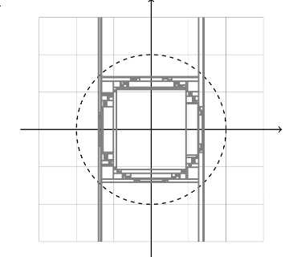
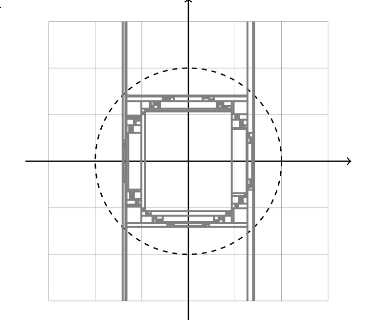

資工系的有趣事
傳教時間
傳教時間
資工系的有趣事
資料結構與演算法
資料結構
- link list
- tree
演算法
- 排序 \(N\) 個數字需要比較 \(N^2\)？
- \(N \log_2{N}\)
- \(1000^2 \approx 1000000\) v.s. \(1000 \times \log_2{1000} \approx 9965\)
自然語言處理
N-Gram
- \(P(w_2 | w_1) = \frac{P(w_1, w_2)}{P(w_1)}\)
Colocation
- 常一起出現的字 \(\implies\) 出現機率不獨立
PMI
- \(\log{\frac{P(x, y)}{P(x)P(y)}}\)
Term Project
10 5 你們說呢 EMOTICON
11 18 看吧.要跟我一樣.悠哉悠哉的小跑步才行ㄡ EMOTICON
12 4 要當一隻帥狗也不是那麼容意的 EMOTICON
13 5 我要每天玩.每天咬.咬到我跑不動的那一天為止 EMOTICON
14 12 今天開始要加班了~媽ㄉ~剝奪我晚上聊天打屁的樂趣! EMOTICON
15 8 昨天~其實根本不在家~害姐姐跟co妮卡等到2點~真是不好意思! EMOTICON
16 7 第二天則到了龍蟠大草原,雖然熱的要死,但風景也是美到無話可說,且還意外的看到 牛 一家人出來散步,真是HAPPY!!而下午,則到了南灣海灘,玩了沙灘排球和沙雕,且也一身濕, EMOTICON 到了晚上,我們到了悠活大飯店,玩盡了許多設施,粉HAPPY的!!對了,我們還去逛了墾丁的夜市,看到了猛男秀,吃了許多奇怪的東西ex:印度拉茶ˋ炸鮮奶等,還吃了土耳其冰淇淋,還被老闆耍了老半天,真是超級令我印象深刻的!!
17 17 獻給全天下為人父、為人子女的!!很感人喔!!真的想掉眼淚了!! EMOTICON
18 35 好懂事的小孩！ EMOTICON
19 32 後來，我吃ㄌ三哥、 芒果布丁 則是買ㄌ車站旁邊那家 好吃好吃 流○水 EMOTICONHMM
- Markov Model：馬可夫模型。
- 可能性：給你模型，算這個模型輸出 \(o_1, o_2, \cdots\) 的機率
- 解碼：給你模型，找這個模型輸出 \(o_1, o_2, \cdots\) 時最有可能的狀態 \(s_1, s_2, \cdots\)
- 訓練：給你一堆觀察到的輸出 \(o_1, o_2, \cdots\)，找出最有可能的模型。
Word Vector
機率
中央極限定理
Chi-Square Test
TF-IDF
對於某個字 w 在文件 d 的重要性：
\[\text{tf} = \frac{ \text{w 在 d 裡出現的次數} }{ \text{文件的字數} }\] \[\text{idf} = \frac{ \text{文件的個數} }{ \text{包含 w 的文件個數} }\]
\(\text{tf-idf} = \text{tf} \times \text{idf}\)
機器學習
機器學習
Classifier
Decision Tree

 

Cluster

以上圖片來自 sklearn 官方網站文件
SVM
Neuron Network
計算機概論
計算機概論
- From Nand to Tetris
- More
Saad Nasser built our Hack computer when he was 11 years old